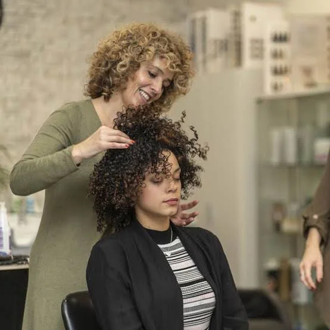
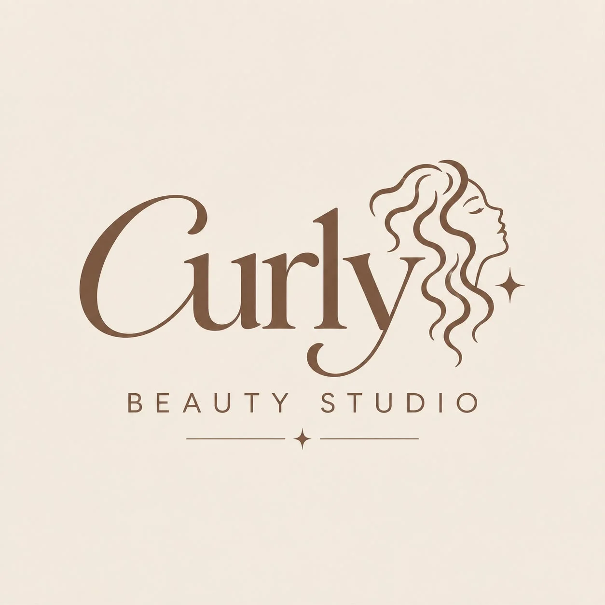
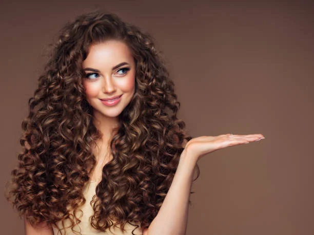
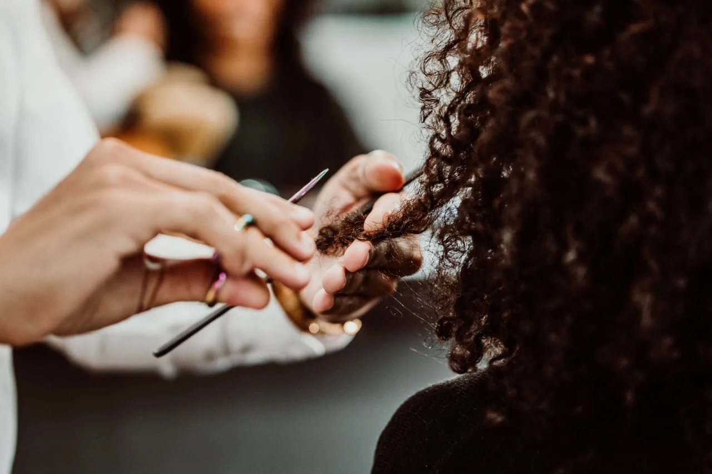
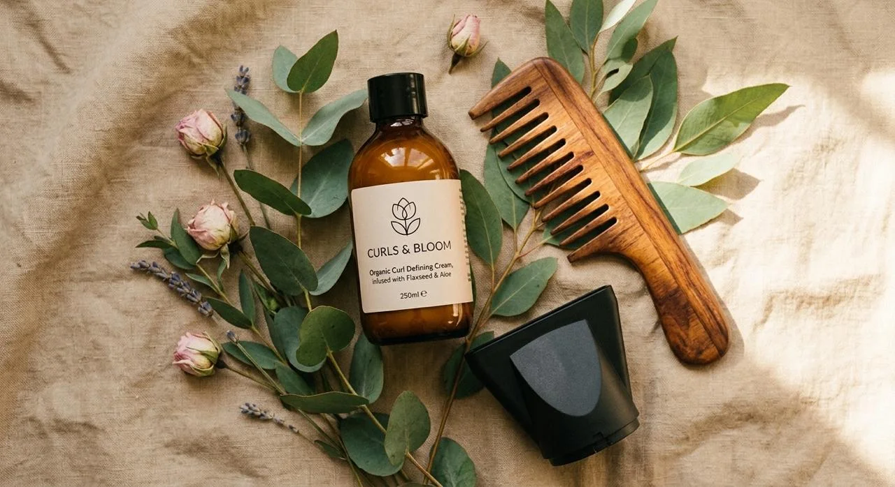
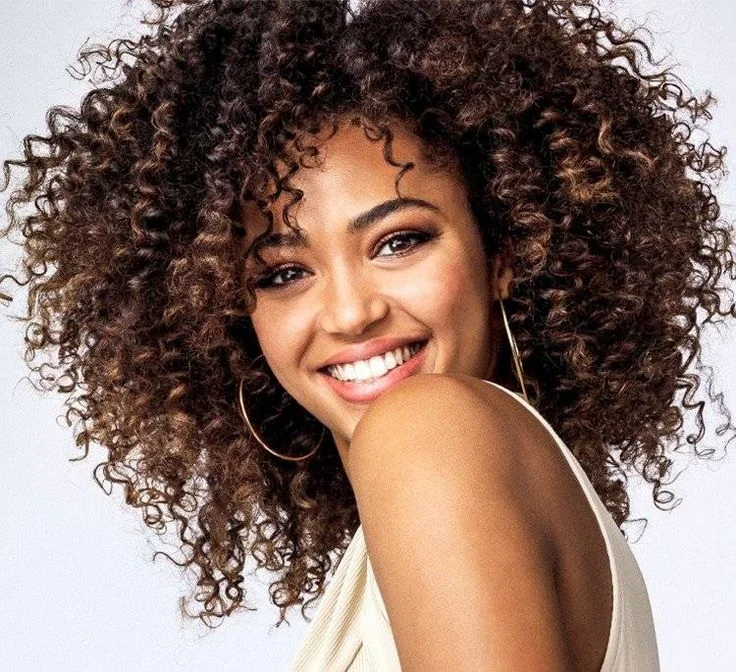

Especialistas en rizos
Nos enfocamos en resaltar la belleza natural de cada tipo de rizo.

Bienvenidas a Curly Beauty Studio, un espacio creado para tus rizos, ven a darle vida, movimiento y amor a tu cabello.

Nos especializamos en el cuidado de cabellos ondulados y rizados, buscando que cada persona pueda conocer, cuidar y disfrutar de su textura natural.

Nos enfocamos en resaltar la belleza natural de cada tipo de rizo.

Utilizamos técnicas pensadas especialmente para cabellos ondulados y rizados.

Trabajamos para que tus rizos luzcan bonitos, fuertes, hidratados y saludables.

Queremos que te sientas orgullosa de tu textura natural y disfrutes de tu cabello.
Descubre nuestros servicios y encuentra el cuidado ideal para tu cabello.
Conoce nuestros servicios Reserva tu cita